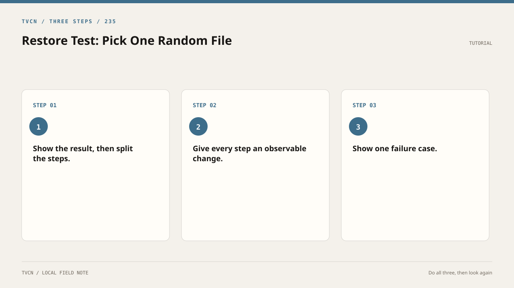

A backup passes when it restores, not when it exists
Once a month, restore one random project to a different drive, open it, relink media and export ten seconds. If restore fails, the backup is not there.
Record restore time and missing files; if every restore needs manual hunting, the structure or checksum is broken.
Limits
RAID and sync folders are not backup. They sync deletions and encryption. Keep one offline, read-only or versioned copy and test restore regularly.
Restore drill: pick a random file and actually restore it
A backup that has never been restored is not a backup. Run a 30-minute drill monthly: pick a random project file, restore to a clean disk, open it and compare the hash.
- Pick at random, not “the most important,” so you do not only rehearse the familiar path.
- Restore to a machine without the original; never overwrite in place.
- Check size, hash and that it opens. Log the time; over two hours means change the plan.
Acceptance: the file opens, the timeline has no offline media and the hash matches. Missing one means the backup plan is not proven.
Three-step flow

On set
Restore one random file to another machine and play it. If it fails, redo the backup.
Do this
A restore drill pulls one random file from backup and opens it; a backup that will not open does not exist.
- Pick one file at random.
- Restore it to another machine.
- Open and play; if it fails, redo the backup.
Avoid
Do not trust a green check in backup software; without a restore, you do not know it opens.
Image note. Covers, diagrams and step images on this page are editorial illustrations or structure diagrams, not photographs of a test performed here; they are not evidence of measured gear performance. Where an image is AI-assisted, the caption says so. Read the test conditions in the text before treating an image as proof.